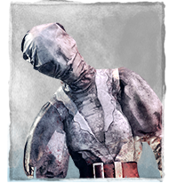
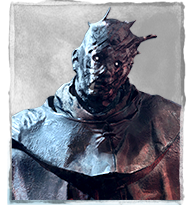
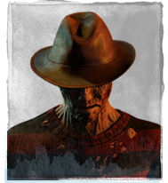

| Killer | Rating | Reason |
|---|---|---|
|  Nurse |
S+ | Nurse is the absolute strongest killer in the game. Her blinks gives her high mobility around the map while also allowing her to ignore solid objects (which is useful during chases where the survivor's can only put solid objects between themselves and the killer to escape). Her mobility gives her the ability to hook a survivor, chase someone else, and then return to the hook as soon as the survivor is unhooked. |
 Hillbilly |
S | Billy's one-hit down is pretty strong because it makes chases go faster. He also has high mobility with his chainsaw, which eliminates the need to slow down the overall game. His ability to go from one side of the map to another in a few short seconds is the most powerful thing you can have in quick-paced games. |
 Doctor |
A+ | The Doctor is a controversial killer because of his ability to gain information about the situation. His Shock Therapy ability allows him to make survivors scream when they are in the terror radius. This means no need for Whispers. His ability also allows him to shutdown pallets and loops because the shock cancels the ability to interact. He also has the longest lunge in the game (comparable to Freddy and Mike at EW3). |
|  Wraith |
D | D for "why couldn't the Doc be this bad?". Wraith is my favorite killer because of his spook factor to brand new survivors. His ability to cloak and gain some movement speed is cool but mostly ineffective against survivors who know how to kite a killer. Some of his addons make him stronger (maybe B tier), but base stats show that he is just a plain killer. |
|  Freddy |
F | Press F to pay respects because Freddy has no strengths at all besides slowing survivors down a bit when they are in the dream world. His speed is about the same as all normal killers, he cannot hit survivors unless they are in the dream (which means no way to effectively camp), and it takes a few seconds to pull people into the dream. Freddy is effective in 1v1 scenarios, however this is a 4v1. |